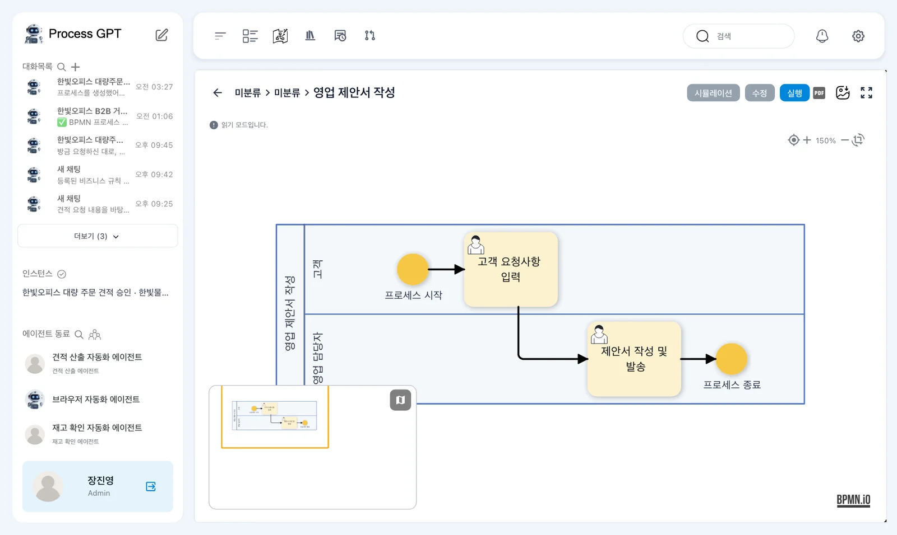
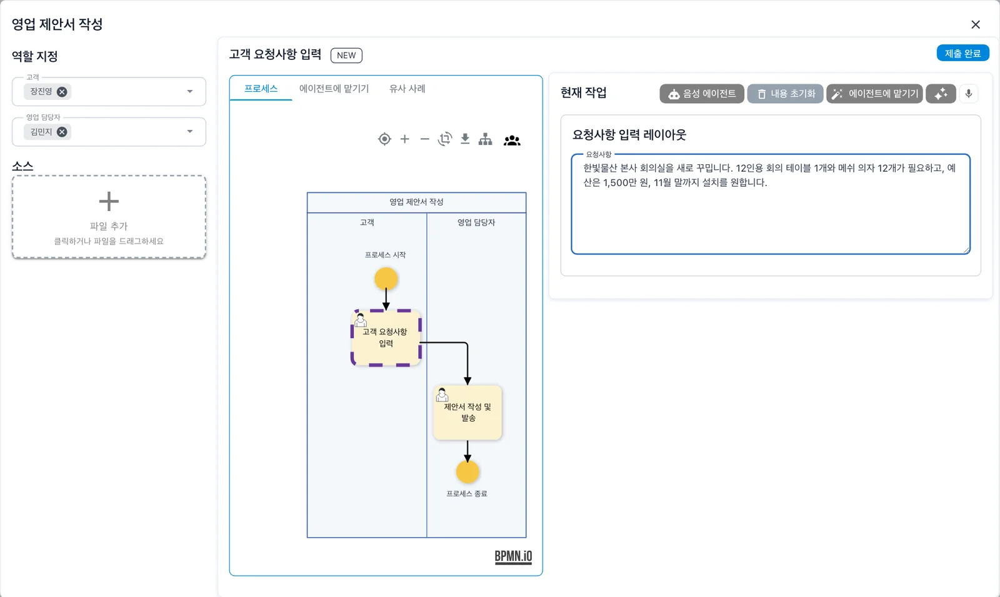
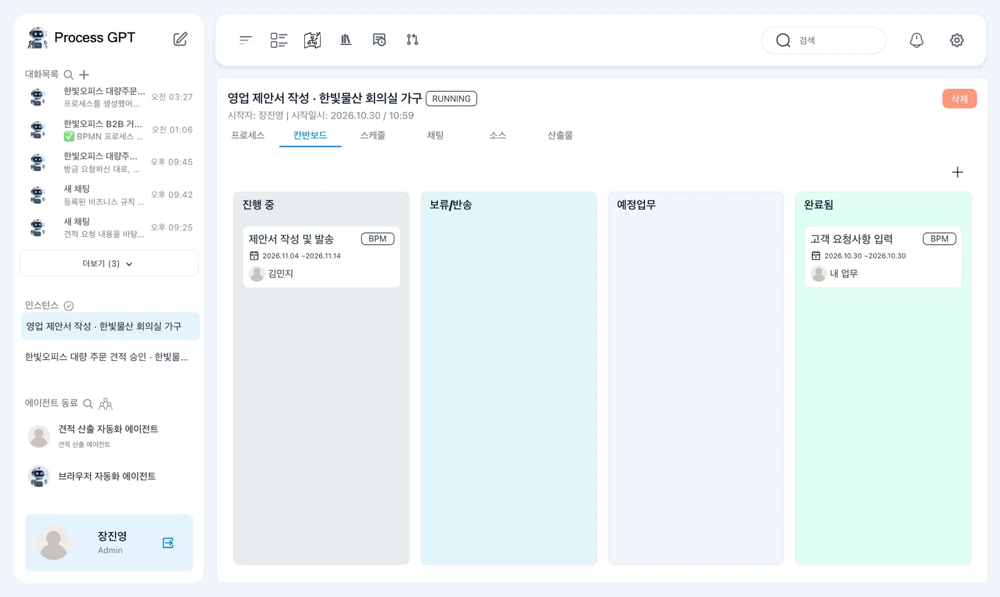
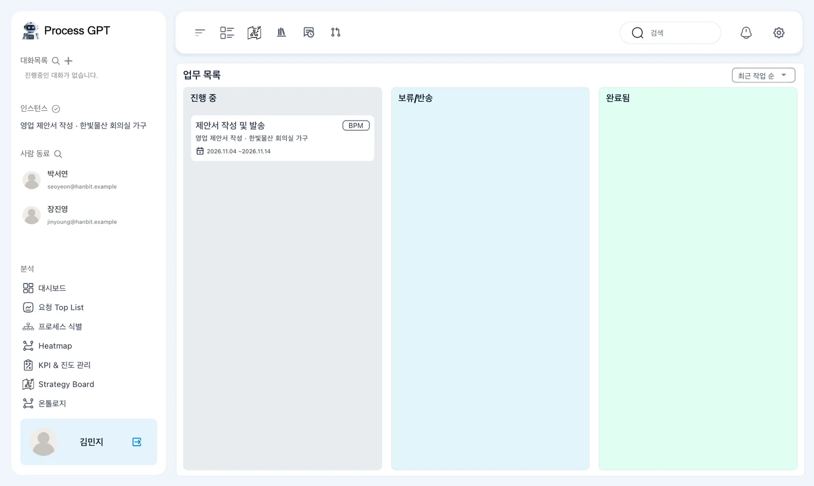
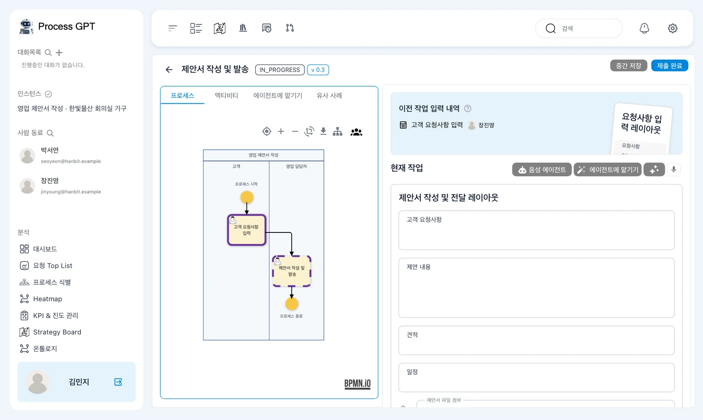
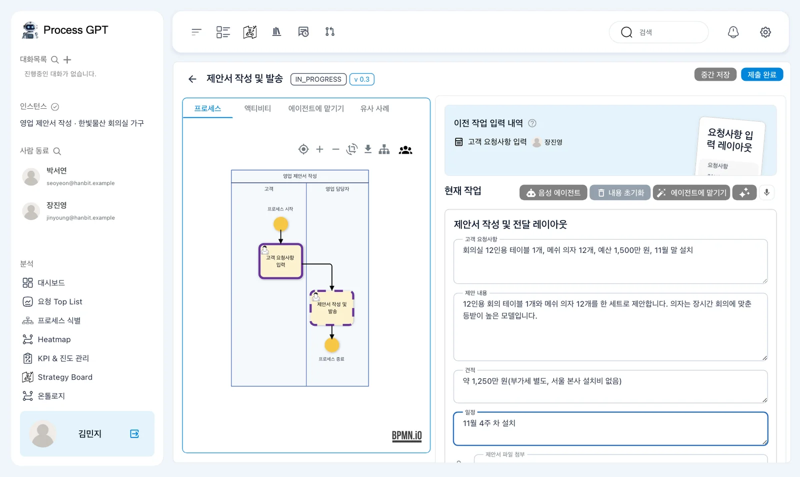
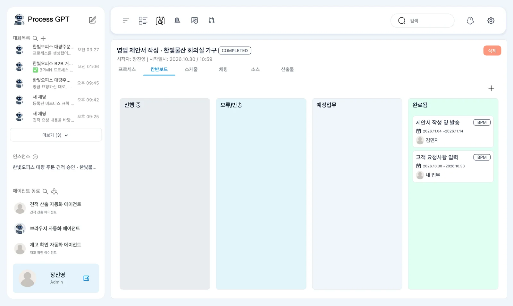

장진영이 「영업 제안서 작성」을 실행하고, 김민지가 받은 할 일을 처리합니다. 고객 요청부터 마지막 단계 완료까지 한 건의 업무가 진행되는 모습을 확인합니다.
설치본 수정이 필요합니다
이 장의 실행 화면은 아래 수정을 넣은 설치본(2026-10-30)에서 찍었습니다. 이 수정이 설치 저장소에 들어가기 전의 설치본에서는 실행이 중간에 멈출 수 있습니다. 들어가면 이 안내를 지웁니다.
- 설치: process-gpt-infra-docker #1 — 할 일 표의 빠진 열(없으면 첫 제출에서 멈춤)
- 화면: process-gpt-vue3 #234 — 실행이 첫 단계와 역할 담당자를 지키게
정의, 인스턴스, 할 일#
5장에서 「영업 담당자」 역할을 김민지로 지정했습니다. 이번에는 그 정의를 실행합니다. 장진영이 고객 요청을 입력하고, 김민지가 제안 내용을 작성합니다.
실행 화면을 보기 전에 세 용어를 구분합니다.
| 용어 | 뜻 | 이번 실습 |
|---|---|---|
| 정의 | 업무의 설계도 | 「영업 제안서 작성」 |
| 인스턴스 | 그 설계도로 한 번 실행한 한 건 | 한빛물산 회의실 가구 요청을 처리하는 한 건 |
| 할 일(업무) | 인스턴스의 한 단계가 담당자에게 간 것 | 김민지에게 간 「제안서 작성 및 발송」 |
정의는 진행할 순서를 담고 있습니다. 인스턴스에서는 그 순서대로 이번 요청을 처리합니다. 담당자는 자신에게 온 할 일 화면에서 폼을 채워 제출합니다.
둘째 단계 「제안서 작성 및 발송」은 4장에서 「제안서 작성 및 전달」을 바꾼 이름입니다.
따라 하기 1 — 실행 창 열기#
장진영으로 로그인한 창에서 시작합니다. 김민지 계정은 뒤에서 다른 브라우저나 시크릿 창으로 엽니다.
- 프로세스 체계도에서 「영업 제안서 작성」 카드를 누릅니다.
- 하위 프로세스 화면에서 흐름도와 위쪽의 「시뮬레이션」·「수정」·「실행」 단추를 확인합니다.
- 「실행」을 누릅니다. 맨 위에 「영업 제안서 작성」이 표시된 실행 창이 열립니다.
- 왼쪽 「역할 지정」에서 「고객」은 장진영, 「영업 담당자」는 김민지인지 확인합니다.

실행 창 가운데에는 첫 단계 「고객 요청사항 입력」과 「NEW」가 보입니다. 「프로세스」·「에이전트에 맡기기」·「유사 사례」 탭이 있고, 흐름도에서는 지금 단계가 보라색 점선으로 표시됩니다.
오른쪽 「현재 작업」에는 「요청사항 입력 레이아웃」 폼과 「요청사항」 칸이 있습니다. 이번 단계에서 장진영이 작성할 곳입니다. 왼쪽 「소스」의 파일 추가는 이 실습에서 쓰지 않습니다.
담당자가 다르게 보일 때
이 실습은 5장에서 「영업 담당자」 레인에 김민지를 지정하고 정의를 저장한 상태로 진행합니다. 역할 담당자가 없으면 실행 창이 조직도를 참고해 추천하며, 맞는 사람을 고르지 못하면 실행하는 사람을 넣습니다. 두 역할이 모두 장진영이라면 앞 장의 지정과 저장 내용을 확인합니다.
따라 하기 2 — 고객 요청 제출하기#
- 오른쪽 「요청사항」 칸에 아래 요청 내용을 입력합니다.
- 역할 지정과 입력 내용을 확인한 뒤 오른쪽 위 「제출 완료」를 누릅니다.
- 인스턴스 화면이 열리면 제목과 「RUNNING」 표시를 확인합니다.
입력할 요청 내용은 다음과 같습니다.
한빛물산 본사 회의실을 새로 꾸밉니다. 12인용 회의 테이블 1개와 메쉬 의자 12개가 필요하고, 예산은 1,500만 원, 11월 말까지 설치를 원합니다.

실습에서는 인스턴스 제목이 「영업 제안서 작성 · 한빛물산 회의실 가구」로 붙었습니다. 이름은 입력한 내용을 보고 자동으로 붙으므로, 실행할 때마다 다를 수 있습니다.
첫 단계의 「제출 완료」를 누른 뒤에도 전체 업무는 「RUNNING」입니다. 장진영의 입력은 끝났지만, 김민지가 처리할 둘째 단계가 남아 있습니다.
이번에는 사람이 폼을 작성합니다
「에이전트에 맡기기」 탭과 단추는 단계를 에이전트에게 맡기는 기능입니다. 13장에서 다룹니다. 「음성 에이전트」는 이 튜토리얼에서는 쓰지 않습니다.
따라 하기 3 — 진행 중인 인스턴스 보기#
인스턴스 화면에는 「시작자: 장진영」과 시작일시가 보입니다. 탭은 「프로세스」·「칸반보드」·「스케줄」·「채팅」·「소스」·「산출물」입니다. 여기서는 「칸반보드」로 단계의 진행 상태를 확인합니다.
- 인스턴스 화면에서 「칸반보드」를 봅니다.
- 「완료됨」에서 「고객 요청사항 입력」 카드를 찾습니다. 장진영의 화면에는 「내 업무」가 표시됩니다.
- 「진행 중」에서 「제안서 작성 및 발송」 카드를 찾습니다. 담당자가 김민지인지 확인합니다.
- 사이드바 「인스턴스」 아래에도 이번 인스턴스가 표시되는지 확인합니다.

이때 「보류/반송」과 「예정업무」는 비어 있습니다. 실습 화면의 김민지 카드에는 예정 기간이 「2026.11.04 ~2026.11.14」로 표시되어 있습니다.
지금 보는 칸반보드는 이번 인스턴스의 단계들을 보여 줍니다. 다음에는 김민지로 로그인해 김민지에게 온 할 일을 확인합니다. 같은 「제안서 작성 및 발송」 카드를 담당자의 업무 목록에서 찾아 처리합니다.
따라 하기 4 — 김민지의 할 일 열기#
- 다른 브라우저나 시크릿 창에서 같은 주소
http://localhost:8088을 열고 김민지로 로그인합니다. - 위쪽 막대에서 「나의 업무」 아이콘을 누릅니다. 2장에서 본 둘째 아이콘입니다.
- 「업무 목록」의 「진행 중」에서 「제안서 작성 및 발송」 카드를 찾습니다. 카드의 인스턴스 이름을 보고 이번 요청인지 확인합니다.
- 카드를 눌러 할 일 화면을 엽니다.

「업무 목록」 오른쪽 위에는 「최근 작업 순」이 보입니다. 카드에는 인스턴스 이름 「영업 제안서 작성 · 한빛물산 회의실 가구」와 예정 기간이 표시됩니다.
열린 할 일 화면에는 단계 이름 「제안서 작성 및 발송」, 상태 「IN_PROGRESS」, 버전 「v 0.3」이 보입니다. 이 버전은 이번 인스턴스가 사용하는 정의 버전입니다. 앞 장에서 저장한 횟수에 따라 숫자는 다를 수 있습니다.
왼쪽에는 「프로세스」·「액티비티」·「에이전트에 맡기기」·「유사 사례」 탭과 흐름도가 있습니다. 오른쪽 위에는 「중간 저장」과 「제출 완료」가 있습니다. 이 실습에서는 「중간 저장」을 쓰지 않습니다.
따라 하기 5 — 앞 단계 내용을 보고 제안 작성하기#
오른쪽 위쪽 「이전 작업 입력 내역」에는 「고객 요청사항 입력 · 장진영」 카드가 있습니다. 앞 단계에서 장진영이 작성한 폼입니다.
그 아래 「현재 작업」에는 「제안서 작성 및 전달 레이아웃」 폼이 있습니다. 4장에서 단계 이름만 바꿨으므로 폼 이름은 3장에서 만든 그대로입니다.

- 「이전 작업 입력 내역」에서 장진영의 「고객 요청사항 입력」 내용을 확인합니다.
- 「현재 작업」의 「고객 요청사항」에
회의실 12인용 테이블 1개, 메쉬 의자 12개, 예산 1,500만 원, 11월 말 설치를 입력합니다. - 「제안 내용」에
12인용 회의 테이블 1개와 메쉬 의자 12개를 한 세트로 제안합니다. 의자는 장시간 회의에 맞춘 등받이 높은 모델입니다.를 입력합니다. - 「견적」에
약 1,250만 원(부가세 별도, 서울 본사 설치비 없음)을 입력합니다. - 「일정」에
11월 4주 차 설치를 입력합니다. - 네 칸의 내용을 확인하고 「제출 완료」를 누릅니다. 「제안서 파일 첨부」는 이 실습에서 쓰지 않습니다.

앞 단계 값은 저절로 옮겨 오지 않습니다
이 실습에서 「현재 작업」의 「고객 요청사항」 칸은 처음에 비어 있습니다. 앞 단계에서 요청을 입력했더라도 이 칸에 자동으로 채워지지 않습니다. 「이전 작업 입력 내역」을 보고 작성합니다.
따라 하기 6 — 전체 완료 확인하기#
- 김민지가 제출한 뒤 인스턴스 화면으로 바뀌면 상태가 「COMPLETED」인지 확인합니다.
- 장진영 쪽에서도 이번 인스턴스의 「칸반보드」를 확인합니다.
- 「진행 중」이 비어 있고, 「완료됨」에 「제안서 작성 및 발송」과 「고객 요청사항 입력」 두 카드가 있는지 확인합니다.

김민지가 처리한 단계는 마지막 단계입니다. 그래서 이번 제출로 할 일과 인스턴스가 모두 끝났습니다. 장진영 쪽에서는 「제안서 작성 및 발송」 담당자가 김민지로, 「고객 요청사항 입력」은 「내 업무」로 보입니다.
처음 제출했을 때는 첫 단계만 끝나고 인스턴스가 「RUNNING」이었습니다. 마지막 단계를 제출한 지금은 인스턴스가 「COMPLETED」입니다. 단계 하나의 완료와 전체 실행의 완료를 구분해 확인합니다.
다음 장으로#
고객 요청을 받아 담당자의 할 일까지 처리했습니다. 7장에서는 영업팀장이 검토해 승인하거나 반려하는 갈림길과, 반려했을 때 되돌아가는 흐름을 다룹니다.
확인 문제
- 정의와 인스턴스는 어떻게 다른가요?
- 김민지의 「고객 요청사항」 칸이 비어 있으면 어디를 보고 작성하나요?
- 장진영의 첫 제출 뒤에는 「RUNNING」이고 김민지의 제출 뒤에는 「COMPLETED」인 이유는 무엇인가요?
답
- 정의는 업무의 설계도이고, 인스턴스는 그 설계도로 한 번 실행한 한 건입니다.
- 「이전 작업 입력 내역」의 「고객 요청사항 입력 · 장진영」 내용을 보고 작성합니다. 이 실습에서는 앞 단계 값이 자동으로 옮겨 오지 않습니다.
- 첫 제출 뒤에는 김민지의 단계가 남아 있습니다. 김민지가 마지막 단계를 제출하면 이번 인스턴스 전체가 끝납니다.